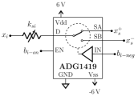

Analog Solver Circuit for Linear Symmetric Positive-Definite Systems at a Complexity Independent of Matrix Size
행렬 크기와 무관한 O(1) 복잡도로 선형 방정식을 푸는 아날로그 솔버 회로가 등장했어요!
왜 선형 방정식 솔버의 속도가 AI·시뮬레이션의 병목이 되고 있을까요?
수치 시뮬레이션, 데이터 분석, 머신러닝 등 현대 컴퓨팅의 핵심 워크로드는 대부분 선형 방정식 시스템(Ax=b)을 반복적으로 풀어야 해요. 디지털 프로세서 기반의 전통적 솔버는 행렬 크기 N에 따라 O(N²)~O(N³)의 계산 복잡도를 가지기 때문에, 대규모 문제에서는 연산 시간과 에너지 소비가 기하급수적으로 증가해요. 특히 반복적 수렴 알고리즘(CG, 공액 경사법 등)을 사용하더라도 매 반복마다 행렬-벡터 곱이 필요해 근본적인 한계가 존재해요.
아날로그 컴퓨팅은 이 문제를 물리적 회로의 자연스러운 동작으로 해결할 수 있는 대안으로 주목받고 있어요. 저항 네트워크는 키르히호프 법칙에 따라 자연스럽게 선형 방정식의 해로 수렴하며, 이 과정은 디지털 연산 없이 전기적 정상 상태 도달만으로 완성돼요. 그러나 기존 아날로그 방식은 음수 계수(negative coefficient)를 표현하지 못하거나, 회로 구성의 복잡도가 행렬 크기에 따라 여전히 증가하는 문제가 있었어요.
대칭 양수 정부호(SPD) 행렬로 구성된 선형 시스템은 저항 네트워크의 물리적 특성과 수학적으로 동형(isomorphic)이에요. 이 구조적 동형성을 완전히 활용하면, 회로가 정상 상태에 도달하는 시간이 곧 솔버의 실행 시간이 되어 행렬 크기에 독립적인 복잡도를 달성할 수 있어요.
어떻게 음의 저항을 만들어 SPD 시스템 전체를 회로로 모델링했을까요?
핵심 아이디어는 비반전(non-inverting) 연산 증폭기 구성을 이용해 네거티브 저항(negative resistance) 회로를 구현하는 것이에요. SPD 행렬의 비대각 원소는 음수 값을 가질 수 있는데, 이를 표현하기 위해 op-amp 기반의 음성 컨덕턴스 소자를 사용해 행렬의 모든 원소를 회로 소자로 1:1 매핑해요. 대각 원소는 양의 저항으로, 비대각 원소의 음수 값은 네거티브 저항 회로로 각각 표현되는 구조예요.
시스템 아키텍처 최적화 측면에서, 행렬의 대칭성을 이용해 중복 회로 소자를 제거하고 배선 복잡도를 절반으로 줄였어요. 입력 벡터 b는 전류원(current source)으로 인가되며, 각 노드의 전압이 해 벡터 x에 해당해요. SDD(대각 지배) 행렬의 경우 회로가 순수 저항 네트워크로만 구성되어 RC 시정수 없이 이론적 최대 속도로 수렴해요. 비대각 우세 SPD 행렬은 op-amp의 동적 특성이 수렴 속도에 영향을 미치지만 여전히 행렬 크기 독립성은 유지돼요.
SDD 행렬의 경우 op-amp 없이 순수 저항 네트워크만으로 구현 가능해 RC 지연이 전혀 없고, 회로가 정상 상태에 도달하는 시간이 N과 무관하게 일정해요. 이는 디지털 솔버 대비 이론적으로 무한히 높은 속도 우위를 대규모 행렬에서 달성할 수 있음을 의미해요.
실제로 행렬 크기가 커져도 풀이 속도가 정말 일정하게 유지되나요?
수치 시뮬레이션 결과, SDD 행렬에 대해 N=4부터 N=256까지 크기를 변화시켜도 수렴 시간이 O(1)로 일정하게 유지됨을 확인했어요. 비대각 우세 SPD 행렬에서는 최대 고유값과 최솟값의 비(condition number) 및 대각 우세 편차(diagonal dominance deviation)에 따라 수렴 속도가 달라지지만, 동일한 조건의 행렬이라면 크기가 커져도 속도 저하가 없어요. 회로의 정확도는 저항 소자의 정밀도에 의존하며, 1% 오차의 저항을 사용한 실험에서도 수치적으로 충분히 정확한 해를 얻었어요.
HBM 설계에 어떻게 적용할 수 있나요?
HBM 및 메모리 인터페이스 설계자 관점에서 이 연구는 매우 흥미로운 시사점을 줘요. 현재 HBM의 PHY 및 채널 등화(equalization) 회로는 채널 임피던스 매칭과 신호 무결성 최적화를 위해 복잡한 선형 시스템을 반복적으로 풀어야 해요. 이 아날로그 솔버를 PHY 내부에 통합하면 적응형 등화 파라미터 계산을 실시간으로, 그것도 디지털 DSP 없이 수행할 수 있는 가능성이 열려요.
더 나아가, HBM 컨트롤러에서 수행되는 ZQ 캘리브레이션, ODT(On-Die Termination) 최적화, 전력 분배 네트워크(PDN) 임피던스 매칭 등도 SPD 선형 시스템으로 모델링 가능해요. 아날로그 솔버를 Die 내부에 소규모로 통합하면 캘리브레이션 속도를 대폭 높이고 디지털 컨트롤러의 연산 부담을 줄일 수 있어요. 특히 HBM4와 같이 고대역폭·저지연이 요구되는 차세대 인터페이스에서 인-시투(in-situ) 파라미터 조정에 활용 가치가 높아요.
실제 반도체 구현 시 저항 소자의 공정 변동(process variation)과 온도 드리프트가 솔루션 정확도에 직접 영향을 미치므로, 캘리브레이션 메커니즘이 필수적으로 동반되어야 해요. 또한 op-amp 기반 네거티브 저항 회로는 면적과 전력 오버헤드가 있어, 대규모 행렬(N>64)에서 회로 면적이 O(N²)로 증가하는 하드웨어 비용 문제는 여전히 해결 과제로 남아 있어요.
Figure 갤러리


